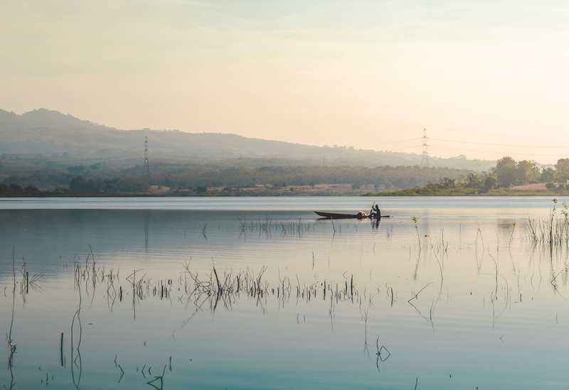

Jarang Dilirik Wisatawan, Ini Lho Tempat Wisata Madiun yang Keren
Madiun memang tidak terlalu terkenal sebagai tujuan destinasi wisata namun sebenarnya Madiun menyimpan banyak tempat menarik untuk dikunjungi. Ada banyak tempat wisata Madiun yang bisa kamu eksplorasi ketika singgah di sini. Penasaran apa aja tempatnya? Cek di sini!
Wahana Bermain Sekar ArumWahana Bermain Sekar Arum merupakan objek wisata Madiun yang edukatif sehingga cocok dikunjungi keluarga. Tempat ini menyediakan banyak bermain anak yang edukatif. Ada pula permainan seru seperti arum jeram, luncur gantung, dll. Wahana Bermain Sekar Arum berlokasi di Desa Kare, Kare, Kota Madiun.
Taman Rekreasi Wisata UmbulTaman Rekreasi Wisata Umbul agak berbeda dibandingkan taman bermain pada umumnya, pasalnya taman ini sudah berdiri sejak masa penjajahan Belanda, lho! Taman ini memiliki kebun binatang mini dan beberapa koleksi binatang. Destinasi wisata Madiun yang terkenal di sini adalah sumber air panas yang mengandung belerang. Selain itu lokasinya juga sangat indah karena berada diantara dua jurang yang saling berhimpit.
Hutan Pinus Nongko IjoHutan Pinus Nongko Ijo terletak di Kecamatan Kare, Kota Madiun. Lokasinya sendiri terletak di kaki gunung Wilis. Di area ini dulunya terdapat banyak pohon nangka hijau oleh karena itu tempat ini dinamakan Hutan Pinus Nongko Ijo yang artinya pohon pinus nangka hijau. Selain pemandangan pepohonan pinus yang menenangkan, di sini kamu juga bisa menikmati keindahan dua mata air yang bermuara ke satu tempat yang dinamakan Tempuran.
Brumbu Tubing AdventurePengen menguji adrenalin dengan wisata sambil olahraga ekstrem? Cobain ke tempat wisata Madiun yang satu ini, Brumbu Tubing Adventure. Lokasinya berada di Kecamatan Wungu, Kota Madiun. Objek wisata di Madiun yang satu ini adalah wahana arung jeram yang cukup populer. Meskipun cukup ekstrem, pengelola selalu menjamin keamanan para pengunjungnya dengan menyediakan alat keselamatan diri.
Situs NglambanganNah, kalo tempat wisata Madiun, Jawa Timur yang satu ini merupakan jejak peninggalan sejarah yang usianya sudah sangat tua. Situs Nglambanga merupakan situs peninggalan Kerajaan Majapahit. Di sini terdapat banyak koleksi benda-benda kuno seperti artefak, lumbung, watudakon, hingga pura lembangsari. Selain jadi tujuan wisata, tempat ini juga sering dijadikan tempat upacara adat setiap malam 1 Suro, lho!
Air Terjun Krecekan DenuAir Terjun Krecekan Denu bisa dibilang termasuk tempat wisata Madiun yang cukup baru. Loasinya sendiri berada di Desa Kepell, Madiun. Untuk sampai ke sini kamu harus mengeluarkan tenaga ekstra karena medannya yang cukup sulit dilalui. Meskipun awalnya melelahkan namun keindahan Air Terjun Krecekan Denu akan menghilangkan semua lelahmu apalagi setelah bermain dengan airnya yang menyegarkan.